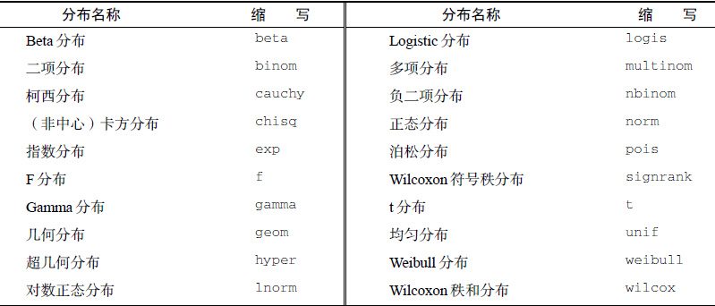
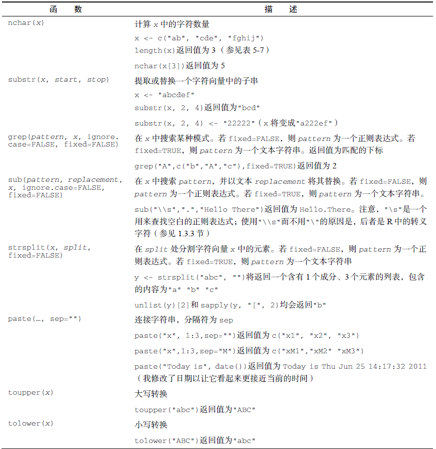

x <- c(1,2,3,4,5)
sum(x) # 求和
## [1] 15
mean(x) # 平均数
## [1] 3
median(x) # 中位数
## [1] 3
sd(x) # 标准差
## [1] 1.581139
var(x) # 方差
## [1] 2.5
mad(x) # 绝对中位差 median absolute deviation
## [1] 1.4826
quantile(x,probs = c(0.05,0.95)) # 分位数
## 5% 95%
## 1.2 4.8
range(x) # 范围
## [1] 1 5
min(x) # 最小值
## [1] 1
max(x) # 最大值
## [1] 5
scale(x) # 中心化，标准化
## [,1]
## [1,] -1.2649111
## [2,] -0.6324555
## [3,] 0.0000000
## [4,] 0.6324555
## [5,] 1.2649111
## attr(,"scaled:center")
## [1] 3
## attr(,"scaled:scale")
## [1] 1.581139
# ?scale9 数值和字符串处理
9.1 数值处理
9.1.1 计算函数
常见的计算函数：
9.1.2 概率函数(选学)
由两部分组成：
- d：密度函数（density）
- p：分布函数（distribution）
- q：分位数函数（quantile）
- r：随机函数（random）

随机正态分布：
rnorm(20, mean = 0, sd = 1)
## [1] -0.01189342 0.97150785 -0.34834515 0.34114266 0.75846531 -0.11429477
## [7] 0.45135419 -0.46919674 -1.07113474 0.92853074 -0.28740223 -1.08953605
## [13] 0.32607886 0.77044361 0.08109076 -0.48020115 -2.07238408 1.05027597
## [19] 0.93529979 -0.74549033密度正态分布：
dnorm(20, mean = 0, sd = 1)
## [1] 5.520948e-88随机均匀分布：
runif(20, min = 10, max = 80)
## [1] 78.53175 26.18025 25.45933 25.36012 61.38357 63.03020 62.48505 23.38116
## [9] 26.84048 26.98216 55.44824 42.90743 64.39923 74.91427 65.48585 23.30270
## [17] 19.86791 71.84066 14.38956 39.49617随机过程无法复现，但是可以通过设置随机种子数复现（所以计算机里面的随机是伪随机）：
# 设置随机种子数，你的结果就能和我一样了
set.seed(123)
rnorm(20, mean = 0, sd = 1)
## [1] -0.56047565 -0.23017749 1.55870831 0.07050839 0.12928774 1.71506499
## [7] 0.46091621 -1.26506123 -0.68685285 -0.44566197 1.22408180 0.35981383
## [13] 0.40077145 0.11068272 -0.55584113 1.78691314 0.49785048 -1.96661716
## [19] 0.70135590 -0.472791419.2 字符串处理
常用的字符处理函数：

以第5章导入的TCGA乳腺癌数据为例。先读取数据：
df <- read.csv("datasets/brca_clin.csv", header = T)
# 检查下数据的基本结构
dim(df)
## [1] 20 9
str(df)
## 'data.frame': 20 obs. of 9 variables:
## $ barcode : chr "TCGA-BH-A1FC-11A-32R-A13Q-07" "TCGA-AC-A2FM-11B-32R-A19W-07" "TCGA-BH-A0DO-11A-22R-A12D-07" "TCGA-E2-A1BC-11A-32R-A12P-07" ...
## $ patient : chr "TCGA-BH-A1FC" "TCGA-AC-A2FM" "TCGA-BH-A0DO" "TCGA-E2-A1BC" ...
## $ sample : chr "TCGA-BH-A1FC-11A" "TCGA-AC-A2FM-11B" "TCGA-BH-A0DO-11A" "TCGA-E2-A1BC-11A" ...
## $ sample_type : chr "Solid Tissue Normal" "Solid Tissue Normal" "Solid Tissue Normal" "Solid Tissue Normal" ...
## $ initial_weight : int 260 220 130 260 200 60 320 310 100 250 ...
## $ ajcc_pathologic_stage : chr "Stage IIA" "Stage IIB" "Stage I" "Stage IA" ...
## $ days_to_last_follow_up: int NA NA 1644 501 660 3247 NA NA 1876 707 ...
## $ gender : chr "female" "female" "female" "female" ...
## $ age_at_index : int 78 87 78 63 41 59 60 39 54 51 ...
head(df)
## barcode patient sample
## 1 TCGA-BH-A1FC-11A-32R-A13Q-07 TCGA-BH-A1FC TCGA-BH-A1FC-11A
## 2 TCGA-AC-A2FM-11B-32R-A19W-07 TCGA-AC-A2FM TCGA-AC-A2FM-11B
## 3 TCGA-BH-A0DO-11A-22R-A12D-07 TCGA-BH-A0DO TCGA-BH-A0DO-11A
## 4 TCGA-E2-A1BC-11A-32R-A12P-07 TCGA-E2-A1BC TCGA-E2-A1BC-11A
## 5 TCGA-BH-A0BJ-11A-23R-A089-07 TCGA-BH-A0BJ TCGA-BH-A0BJ-11A
## 6 TCGA-E2-A1LH-11A-22R-A14D-07 TCGA-E2-A1LH TCGA-E2-A1LH-11A
## sample_type initial_weight ajcc_pathologic_stage
## 1 Solid Tissue Normal 260 Stage IIA
## 2 Solid Tissue Normal 220 Stage IIB
## 3 Solid Tissue Normal 130 Stage I
## 4 Solid Tissue Normal 260 Stage IA
## 5 Solid Tissue Normal 200 Stage IIB
## 6 Solid Tissue Normal 60 Stage I
## days_to_last_follow_up gender age_at_index
## 1 NA female 78
## 2 NA female 87
## 3 1644 female 78
## 4 501 female 63
## 5 660 female 41
## 6 3247 female 59计算字符数量：
x <- df$barcode[1:3]
x
## [1] "TCGA-BH-A1FC-11A-32R-A13Q-07" "TCGA-AC-A2FM-11B-32R-A19W-07"
## [3] "TCGA-BH-A0DO-11A-22R-A12D-07"
nchar(x)
## [1] 28 28 28截取字符串、替换字符串：
x <- df$barcode[1]
x
## [1] "TCGA-BH-A1FC-11A-32R-A13Q-07"
substr(x, start = 1, stop = 15)
## [1] "TCGA-BH-A1FC-11"
substr(x, start = 1, stop = 3) <- "ggg"
x
## [1] "gggA-BH-A1FC-11A-32R-A13Q-07"查找字符串：
x <- c(df$barcode[1:3], "hahahaha")
x
## [1] "TCGA-BH-A1FC-11A-32R-A13Q-07" "TCGA-AC-A2FM-11B-32R-A19W-07"
## [3] "TCGA-BH-A0DO-11A-22R-A12D-07" "hahahaha"
grep("TCGA", x)
## [1] 1 2 3
grepl("TCGA", x)
## [1] TRUE TRUE TRUE FALSE搜索替换，横杠变成下划线：
x <- df$barcode[1:5]
x
## [1] "TCGA-BH-A1FC-11A-32R-A13Q-07" "TCGA-AC-A2FM-11B-32R-A19W-07"
## [3] "TCGA-BH-A0DO-11A-22R-A12D-07" "TCGA-E2-A1BC-11A-32R-A12P-07"
## [5] "TCGA-BH-A0BJ-11A-23R-A089-07"
sub("-","_",x)
## [1] "TCGA_BH-A1FC-11A-32R-A13Q-07" "TCGA_AC-A2FM-11B-32R-A19W-07"
## [3] "TCGA_BH-A0DO-11A-22R-A12D-07" "TCGA_E2-A1BC-11A-32R-A12P-07"
## [5] "TCGA_BH-A0BJ-11A-23R-A089-07"
gsub("-","_",x)
## [1] "TCGA_BH_A1FC_11A_32R_A13Q_07" "TCGA_AC_A2FM_11B_32R_A19W_07"
## [3] "TCGA_BH_A0DO_11A_22R_A12D_07" "TCGA_E2_A1BC_11A_32R_A12P_07"
## [5] "TCGA_BH_A0BJ_11A_23R_A089_07"分割字符串：
x <- df$barcode[1]
x
## [1] "TCGA-BH-A1FC-11A-32R-A13Q-07"
strsplit(x, split = "-")
## [[1]]
## [1] "TCGA" "BH" "A1FC" "11A" "32R" "A13Q" "07"连接字符串：
paste("haha",1:3,sep = "")
## [1] "haha1" "haha2" "haha3"
paste("haha",1:3,sep = " ")
## [1] "haha 1" "haha 2" "haha 3"
paste("haha",1:3,sep = "OOO")
## [1] "hahaOOO1" "hahaOOO2" "hahaOOO3"
paste("今天是",date())
## [1] "今天是 Wed Aug 20 13:26:04 2025"
paste0("haha",1:3)
## [1] "haha1" "haha2" "haha3"大小写转换：
x <- c("asdf","asdf","ghb")
toupper(x)
## [1] "ASDF" "ASDF" "GHB"
x <- c("SADFf","FAFFaa")
tolower(x)
## [1] "sadff" "faffaa"
注释
更高级的字符处理技术请学习R包stringr和正则表达式，非常强大！